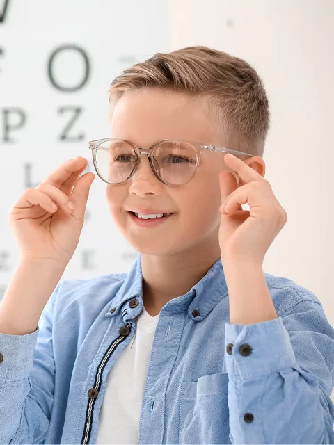
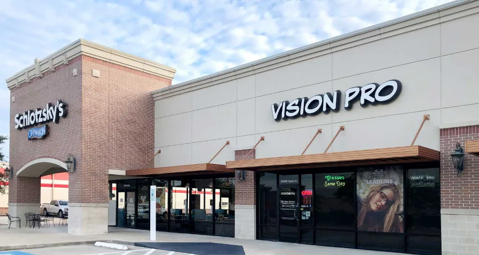
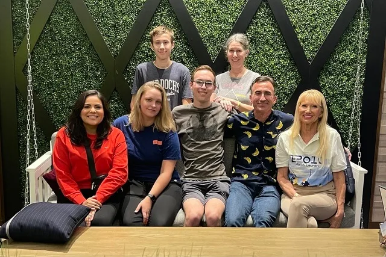
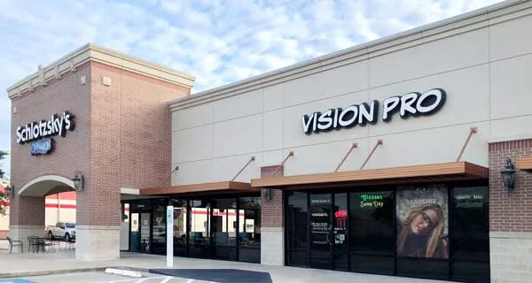
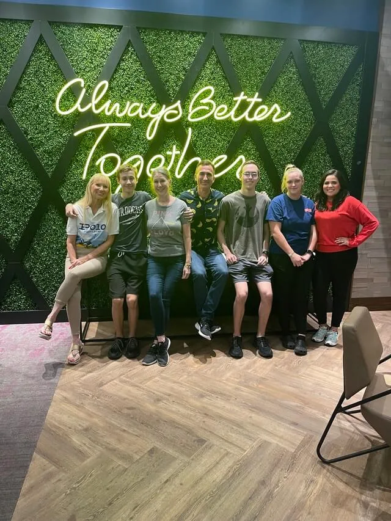
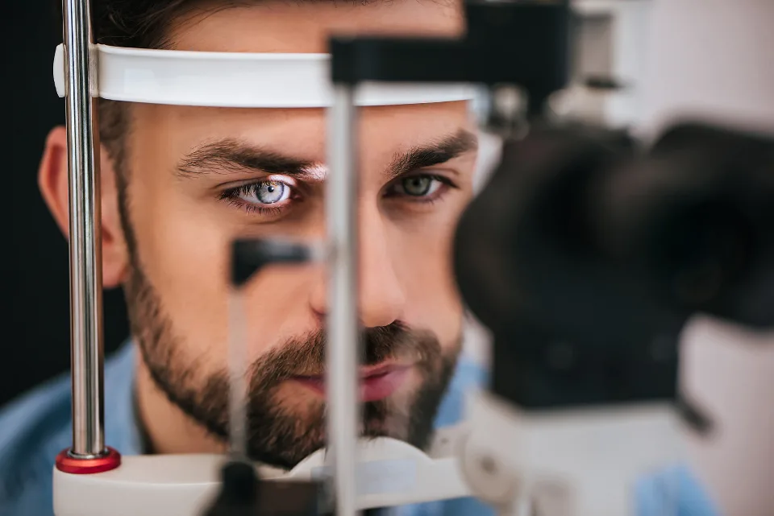
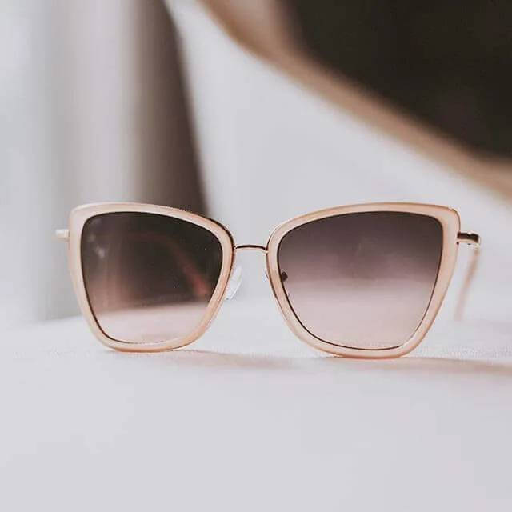
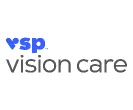
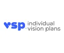

Myopia Management
We help slow the progression of nearsightedness in children and teens with proven solutions like MiSight® lenses and orthokeratology—preserving vision for the future.
Same Day Glasses in many prescriptions
At Vision Pro, we’re more than just your local eye doctor—we’re your long-term partner in vision and eye health.
Located in the heart of Spring, Texas, our clinic combines small-town friendliness with modern technology to deliver comprehensive, personalized eye care for the entire family. We serve patients throughout Spring, TX and the greater Houston area including Tomball, The Woodlands, and Klein.
From routine eye exams and glasses to contact lenses and dry eye treatments, our goal is to help you see clearly and comfortably.

Kuykendahl RoadNext door to Schlotzsky’s
Locally owned
Vision Pro is proud to be one of the few independent locally-owned optometry clinics still around! We are “sandwiched” between Schlotzsky’s and Little Caesar’s, on Kuykendahl Road.
Hours & Location


Eye Care Services
Diabetes can affect the health of your eyes and may lead to vision complications if not monitored regularly. Routine diabetic eye screenings help detect early signs of diabetic eye disease and protect long-term vision.
At Vision Pro, we provide comprehensive diabetic eye exams and screenings to monitor the health of your eyes and identify any changes related to diabetes.
If you have diabetes, regular eye screenings are an important part of protecting your vision and overall health.
Schedule your diabetic eye screening today.


We help slow the progression of nearsightedness in children and teens with proven solutions like MiSight® lenses and orthokeratology—preserving vision for the future.
If your eyes feel dry, gritty, or irritated, we offer customized treatments to restore comfort and tear function, including prescription drops and in-office therapies.
From daily disposables to specialty lenses for astigmatism or presbyopia, we fit contacts that match your vision needs and lifestyle—with expert training on wear and care.
We monitor and treat conditions like glaucoma, macular degeneration, and diabetic eye disease—using advanced diagnostics to protect your long-term vision and eye health.

Your Spring Eye Doctor
Meet our optometrist in Spring, Texas. Paul Proske, Therapeutic Optometrist and Glaucoma Specialist, is dedicated with a passion for personalized, preventative care. With over two decades of experience, he’s known for his attentive listening, thorough exams, and genuine concern for each patient’s long-term vision.
Individualized attention is the foundation of our care, to ensure that your eyes remain healthy. We’re dedicated to optimizing your vision!
Myopia Management
At Vision Pro in Spring, TX, we are committed to providing advanced solutions to protect your child’s long-term vision. Stellest® lenses are a clinically proven option designed to correct nearsightedness while significantly slowing myopia progression in children.
Unlike standard lenses, Stellest® lenses use a breakthrough lens design that helps manage how the eye grows. If your child’s prescription continues to increase each year, this technology can offer a proactive way to protect their eye health.
Learn more about how Stellest® lenses can be part of your child’s long-term myopia management plan.
Eye Exams
Clear vision starts with a precise, personalized prescription. At Vision Pro, we provide comprehensive eye exams for glasses designed to protect your long-term ocular health and optimize your daily visual clarity. Whether you are experiencing digital eye strain at work, noticing a slight blur in your distance vision, or it has simply been over a year since your last visit, our detailed routine glasses exams ensure your eyes are performing at their absolute best. Dr. Proske, O.D. performs meticulous prescription eyewear exams utilizing state-of-the-art diagnostic technology.
These specialized spectacle exams do more than just measure your sight; they thoroughly evaluate your complete eye health, screening for common conditions such as glaucoma, cataracts, and dry eye. Following your evaluation, we fine-tune exact glasses prescriptions tailored specifically to your daily environment—whether you require high-definition progressive lenses or advanced blue-light filtering coatings. Once your exam is complete, you can step right into our optical boutique to pair your new prescription with our premium designer frames!
Dry Eye
Meibomian Gland Dysfunction (MGD) is one of the most common causes of dry eye, often leading to redness, irritation, and blurred vision.
We use advanced diagnostic imaging and in-office therapies like iLux® or BlephEx® to gently unclog and restore your meibomian glands—helping your eyes produce a healthier, more stable tear film. Watch the video to learn how this innovative treatment works to bring long-lasting relief.

We offer a wide range of designer frames, sunglasses, and lens upgrades. We also provide contact lens fittings, including soft, tori, multifocal, and specialty lenses for hard-to-fit-eyes.
Using advanced diagnostic tools like Optomap ultra‑wide retinal imaging, we detect eye diseases early, keeping your vision sharp and healthy. Every visit begins with a comprehensive eye exams, including visual acuity, eye pressure, and retinal scans.
Find us at 20290 Kuykendahl Road, Spring, TX. Serving Spring, The Woodlands, Tomball, Klein, and beyond, we’re conveniently located near Schlotzsky’s & Little Caesar’s on Kuykendahl Rd. Free parking available and handicap accessible. Schedule your appointment today.
Optical
At Vision Pro, we offer a curated collection of designer eyeglass frames to suit every style and face shape. Whether you’re looking for bold, fashion-forward styles or classic, understated elegance, our optical team will help you find the perfect pair.
Featuring trusted brands and the latest trends, our frames blend high-quality craftsmanship with everyday comfort—so you can see great and look even better.
Urgent care
If you experience loss of vision, double vision, swelling, infection or any eye emergency, contact us immediately for guidance. We’ll help you with the best treatment to prevent complications and promote long-lasting clear eyesight. If we are not open do not delay, go to an emergency room.
Please call our office at: 281-709-2618 for further instructions. If urgent, find the nearest emergency room.
Call 281-709-2618Attentive, friendly, professional! Staff and Doctor Proske keep us coming!!
Insurance
Understanding insurance can be confusing, but we’re here to make it easy. Vision Pro accepts a wide range of vision and medical insurance plans to help cover your eye exams, contact lenses, and more.
Not sure what’s included in your benefits? Just give us a call! We’ll gladly verify your coverage and explain your options, so you can focus on your vision—not the paperwork. No insurance? Ask about our affordable self-pay options.


What’s New
Healthy contact lens habits can help teens protect their eyes, maintain comfortable vision, and confidently manage their lenses through school, sports, and busy...
Many people wear sunglasses occasionally, but if you rely on prescription glasses to see clearly, standard sunglasses may not provide the protection and...
Dry Eye Treatment Options in Spring TX: Balances and BreakthroughsBalancing the Drops: Your Friendly Guide to Advanced Dry Eye Therapy in SpringThe Great...
The world should appear in sharp detail. If your vision feels hazy or out of focus, it is time to seek professional guidance...
Visit Us
20920 Kuykendahl Rd., Ste C, Spring, TX 77379
20920 Kuykendahl Rd., Ste C
Spring, TX 77379
Phone: (281) 353-3937
| Monday: | Closed |
|---|---|
| Tuesday: | 9:00 AM - 1:00 PM 2:00 PM - 6:00 PM |
| Wednesday: | 9:00 AM - 1:00 PM 2:00 PM - 6:00 PM |
| Thursday: | 9:00 AM - 1:00 PM 2:00 PM - 6:00 PM |
| Friday: | 9:00 AM - 1:00 PM 2:00 PM - 6:00 PM |
| Saturday: | 9:00 AM - 2:00 PM |
| Sunday: | Closed |
Vision Pro · Spring, TX
20920 Kuykendahl Rd., Ste C, Spring, TX 77379